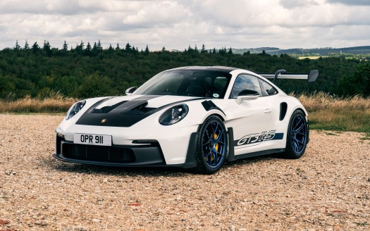
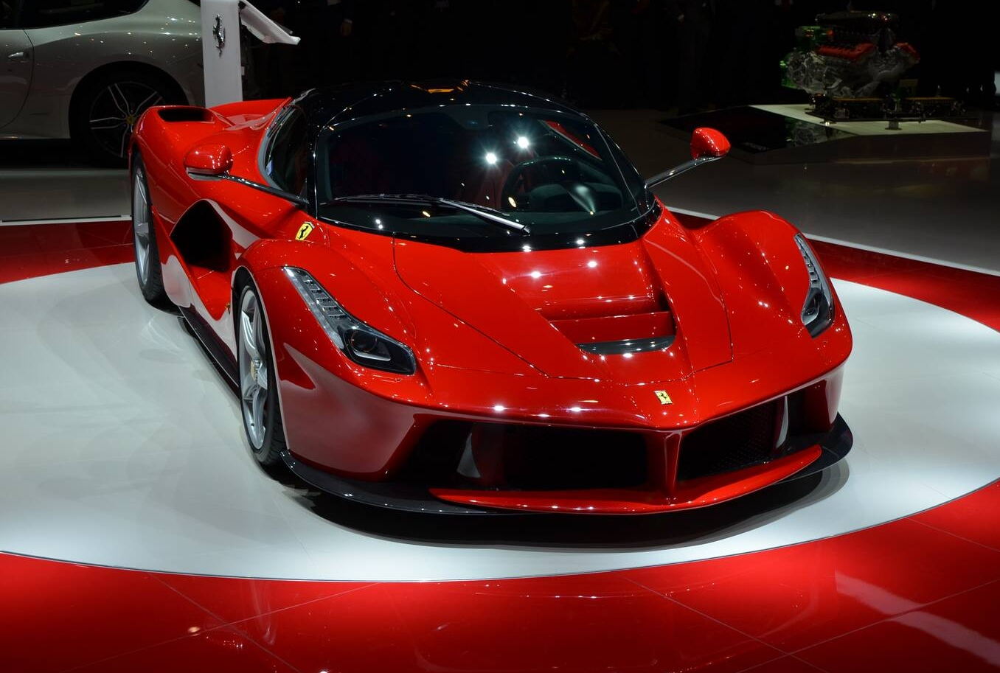

The Porsche 911 GT3 is a high-performance homologation model of the
Porsche 911 sports car. It is a line of high-performance models, which
began with the 1973 911 Carrera RS. The GT3 has had a successful racing
career in the one-make national and regional Porsche Carrera Cup and GT3
Cup Challenge series, as well as the international Porsche Supercup
supporting the FIA F1 World Championship.


LaFerrari, project name F150,[4] is a limited production mid-engine,
mild hybrid sports car built by Italian automotive manufacturer
Ferrari.[5] LaFerrari means "The Ferrari" in Italian; this is intended
to be the definitive Ferrari.
The La Voiture Noire is a one-off special introduced at the 2019 Geneva
Motor Show. Based on the Chiron, the design of the car harkens back to
the Type 57 SC Atlantic and is a celebration of the company's
distinctive design history. The car has a hand-built body made from
carbon fibre designed by Bugatti designer Etienne Salomé which has an
elongated nose (similar to that on the Divo) and an elongated back
section. Other notable features include unique wing mirrors, LED
taillight strip, and wheels. Unlike the original, the car has a
mid-engine layout.
The Agera RS is the ultimate in road and track versatility. It offers
extreme performance and is fully road-legal, complying with safety
standards, emissions and homologation requirements worldwide. It uses
advanced technology developed during our Koenigsegg One:1 program while
maintaining all the functionality of previous S and R models.
Lamborghini created the Aventador SVJ to embrace challenges head-on,
combining cutting-edge technology with extraordinary design, while
always refusing to compromise. In a future driven by technology, it’s
easy to lose the genuine thrill of driving. But in the future shaped by
Lamborghini, this won’t be left behind, because there will always be a
driver behind the wheel.